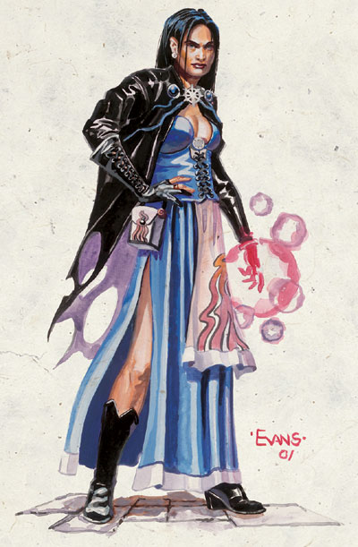
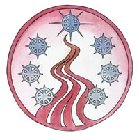

密斯拉 （神秘女士，众魔法之母）

强大神力
标志：七颗蓝白星星组成圆圈状，中间流淌出红雾

居住领域：魔域之心（Dweomerheart）
位面：极乐境
阵营：中立善良
神力：魔法，法术，魔网
信徒：精灵，半精灵，奥术使用者，神秘游荡者，术士，法术舞者，魔火拥有者（Spellfire channelers）,法师 （注意，前面的奥术使用者估计指的是耐瑟瑞尔的那种奥术师）
牧师阵营：叛逆善良，守序邪恶，守序善良，守序中立，中立善良
领域：善良，幻术，知识，魔法，符箓文字，法术
喜爱武器：七颗旋转飞舞的星星（Shuriken一种铁蒺藜一样的投掷类武器）
密斯拉提供了接触魔网的途径，并致力于维护它。实际上她就是魔网的化身。魔网是用来使凡人施法者和魔法物品制造者能够安全使用魔法元能的渠道。密斯拉还负责魔法将产生的可能性，这就使她成为托瑞尔上最强大的存在之一。尽管她更喜欢善良的灵魂，她却已经学会作为魔法之神，自己必须维护平衡。即使她有机会阻止那些与她的哲学理念相左的法术和魔法物品的创造，她也很少这样做，除非它们总体上直接威胁了魔网和魔法本身。密斯拉的形象是一个美丽的人类女子，有着乌黑飘逸的长发和闪亮的皮肤。
密斯拉的教会在费伦各地势力庞大，信徒众多。假如有更多的法师和术士成为神秘女士热心的追随者的话，她的教会无疑将成为全费伦最强大的。密斯拉的信徒自从纷乱之世以后失去了很大一部分影响力，因为（在此期间）魔法失去了控制，造成了巨大的破坏。女神在最近十年的活动只是更进一步地将信徒们，尤其是邪恶的法师和术士，驱入了莎尔的怀抱中。
密斯拉的牧师们选定白天或者黑夜的某个时间不停地祈祷神术。他们庆祝每年Marpenoth月的15日，这天是现在的这位密斯拉从她的凡人形态封神的日子。不过除此之外他们并没有很多日历上固定的仪式，而更多地注重一种个人化的崇拜。对于某些敬神的奥术施法者来说，这种崇拜只不过是一种低声的感谢他们施放的每个法术，也夹杂着一些对于法术使用道德上后果的某些思考。有两个具有显著个人意义的庆典仪式是星光飞行和法师之火。前者主要是一个飞行术，使人在只要天上看得见星星的情况下就一直能飞行，它经常用作一个新进成员加入教会或者两个信徒结婚的标志。在法师之火的仪式中，巨大的魔法能量从人体内喷涌而出，化为闪耀的蓝色火焰洒向前方，起到洗涤和净化的作用。咏叹女神是一个肃穆的仪式，多用在葬礼的场合。当活着的牧师开口吟唱一曲哀歌的时候，死去的法师和密斯拉牧师的形象就会升起。密斯拉常常还会加入她自己的指引形象。密斯拉的牧师经常会兼职成arcane devoters，魔域守护者，术士和法师。
历史
密斯拉是耐瑟瑞尔兴起以来第三位拥有神秘女士和众魔法之母称号的神祗。第一位是密斯翠，她为从骄傲自大的耐瑟瑞尔大法师卡尔苏斯的破坏中拯救魔网而死。第二位神秘女士就是设立密斯拉选民的那个。他们包括伊尔明斯特，凯尔本和七姐妹。她在纷乱之世中死于海尔姆手中，当时她正试图返回诸位面。当天神化身的危机结束的时候，一个叫午夜的凡人法师取得了神的地位。就像希瑞克和克立姆弗那样，这位新的密斯拉也花了一些时间来适应自己作为神的地位。近十年来，她一直在许多场合迎战她的旧日敌人希瑞克。有一段时间她甚至拒绝神灵和凡人使用魔法。不过在此之后她似乎已经懂得自己要作为平衡的维护者和魔网不具倾向性的仲裁者这一角色。
密斯拉的主要参谋是阿祖斯，尽管法术之神与她的关系不如与前一位神秘女士那样密切。Savras 和 Velsharoon通过为阿祖斯服务来间接为密斯拉自己效劳。众魔法之母和那些与知识有关的神保持紧密的同盟，包括奥格马，德内尔，米利尔，还有那些其他神族的魔法之神，象柯瑞隆.拉瑞辛，伊西丝和索思。尽管她仍然憎恨希瑞克，并仇视班恩的回归，她的主要敌人是莎尔。莎尔很久以前秘密创造了影魔网来对抗茜璐（Selune）创造密斯翠和魔网的行动（莎尔自己也无意中作为一分子参加了这个）。密斯拉把莎尔的行为看作是对她神力的直接威胁，她和茜璐的关系十分紧密并与日俱增。她的目标是最终把莎尔的影魔网纳入自己的神力，哪怕这样意味着牺牲她最后一点残存的人性和天生的善良并更多吸纳来自莎尔的黑暗部分。
教条
热爱魔法本身。不要只把它当成一件可以将世界改造成合乎你心愿模样的武器。真正的智慧是懂得而不是使用魔法。当你的力量增强的时候要尽力少使用魔法，因为使用它的迫切愿望和对它寄予的希望常常要超过它实际的表现。魔法是艺术，是女神的礼物。那些有幸拥有它的人是最享有特权的。懂得这些，因此处事要谨小慎微，勿骄傲自大。聪明有效地使用这项艺术，不要鲁莽粗野。永远要孜孜追求学习和创造新的魔法。
教会和神庙
密斯拉的教会努力保存所有的魔法知识，这样魔法就可以流传后世，不管费伦上的智慧种族和诸位面的神祗们自己会有何命运。他们维护秘密图书馆，私人避难所，警卫森严的研究实验室和小而隐蔽的储藏室。密斯拉信徒还致力于寻找那些精于法术使用的人，并密切关注那些可能成为重要法术拥有者的个人，注意他们的力量和一举一动。教会积极寻找那些古老魔法的来源，经常是从那些墓地，危险遗迹——甚至从巫妖本身那里。他们认为知道古老宝物的确切地点和它们的魔法力量要比实际拥有它们更重要，但当可能的时候，他们会努力从那些富有侵略性的恶人，不负责任的家伙以及神智不健全的人那里夺走这些东西的控制权。一些密斯拉的牧师仍然遵循那位老神祗守序中立的立场，但大多数已经将他们的阵营转化为与现有女神的一致或者干脆离开教会。密斯拉的所有神职人员都被希望在获得足够经验后自行制造自己的新魔法（不管是法术还是物品）。这样，魔法研究总是一种不断发展，生机盎然的事物。而魔法也就不仅仅被视为那些试图控制费伦大陆的统治者和计划者们合手的工具，而仍然是一种奇迹般的东西。
密斯拉的神庙可以是几乎任何大小或者任何样式的建筑，有些神庙就是天然的大小洞穴。所有这些都是活生生的艺术品——或者说是，由魔法创造出来，里边蕴藏着无数法术的艺术。大多数这类神庙都充满着魔法物品，其中许多充满神秘的意味而不是出于实用的考虑。大多数神庙都有一个中央大院，在那里举行每日的仪式，从那里人们也能在晚上看见星星或者由魔法模仿的星星。较小的房间被作为收藏魔法知识的图书馆，工房，或者研究魔法艺术的实验室。那些专门奉献给女神的地点被用魔网增强，在那里法术的威力变大了。在那些地方由她的牧师施放的法术可以获得一个变化魔法（Metamagic）的专长（Feat）而无需占用一个更高的施法空格。这项优惠仅在受惠者处于神庙范围内有效。
密斯拉信徒的正式宗教服饰包括简单的蓝色长袍，有时候镶以白边。在较寒冷的地方外面还有一件深蓝色的罩袍。还要求头上戴着某种蓝色的物品，这可能是剑湾以北那些学术组织的简单小帽，也可能是南方诸地的带有装饰的宽帽或者头盔。
密斯拉的标记在纷乱之世以前是蓝白色的星星，不过现在新的和旧的标记都在使用。密斯拉的教会对于那些旧密斯拉的信徒非常宽容，因为他们觉得只有了解过去才会有进步。他们让那些旧信仰的标记保留下来，不过当他们要创建新的标记的时候，总是选择女神那个新的法印。
所有那些掌握魔法的人和追求任何种族神秘知识的人都会被欢迎加入为密斯拉服务的行列。密斯拉教会分布广泛，结构不一，常常分成那些追求单一种类魔法能量的团体。不同团体和信仰分会之间的关系是很好的。神赐法术和奥术的施法者都能在它们中间找到位置，而不管这些人的经验等级和背景。密斯拉信仰的一般原则是天分和能力要胜过社会等级和传奇业绩（？？legendary feat,是不是指以往的业绩）。
教会还赞助一个由圣武士组成的骑士社团，一个小小的巡林客行会和一个吟游诗人团体。神秘之火骑士团的骑士们经常在各种确定失传魔法财富地点的行动中随伴教会成员们。这些圣武士还担任那些守护大型密斯拉神庙和工场的武装团体的基干和领袖。巡林客的行会称为流星会，他们主要担任远程侦察人员和教会的间谍。他们也要对付那些对自然秩序的魔法威胁，例如被释放的恶魔或者从不负责任的奥术试验中产生的生物。星翎之子诗人协会的游吟诗人们常常为教会担任信息收集者和谣言传播者的任务，除此之外他们还会在图书馆里发掘魔法知识并为后世保存它们。有些星翎的成员们同时也是竖琴手。（译者：很正常，竖琴手的头子们几乎都是密姐的这个或那个选民，要么就是得到了她的某种好处（Spellfire）J）
密斯拉的能力
本体
20级法师/10级博学士/5级大法师/20级牧师
中型外界者（善良）
神格等级：18
生命骰：20d4+140(法师)加10d4+70（博学士）加5d4+35（大法师）加20d8+140（牧师） 生命值 685点
优先攻击权：+9
速度：60呎
防护等级：78 （加9敏捷，加18神圣，加31自然，加10偏转（deflection）
攻击：加5敏锐回归震撼法术储备shuriken 加56远程；或者法术加53近身或加55远程触摸。总是得到20的攻击检定。掷骰检定为致命一击。
伤害：加5远程敏锐回归法术储备shuriken 13点加1d6 电击伤害/19-20致命一击；或者按法术。总是造成最大伤害（13点加6点电击伤害）
面宽/可触距离 ：5呎 及5呎/5呎
特殊攻击：神秘之火（600呎，5d6+1d6/法术等级），领域力量，突出神圣能力（salient divine abilities），类法术能力，转化不死生物/每天13次。
特性：专长知识，神秘探索（arcane reach）,奖励语言（2），神圣笼罩（18哩，DC38）,神圣免疫，DR53/+4，魔宠（猫），火系抗力58，神祗国度（100哩外界，1800 呎主位面），传奇专家，瞬间熟习（伪造文书），传奇+72，健体密技，熟习反制法术，熟习元素，熟习变形，进阶发现新秘法（more new found arcana）,发现新秘法（newfound arcana），随意位面传送 （plane shift）,远程沟通18哩，任意施放神圣法术，SR70，随意无误传送，真实传奇（true lore）；领悟，交谈，阅读所有语言并直接与18哩内的任何存在交谈。
豁免值：坚韧+49，反射+50，意志+62，在豁免时总是得到20
能力：力量24，敏捷28，体质24，智力45，感知40，魅力30
技能：炼金术+58，估价+58，专注+85，工艺（书籍编订）+80，工艺（书法）+72，工艺（切割宝石）+72，工艺（金工）+64，工艺（石雕术）+64，工艺（木雕术）+64，外交+54，解除装置+36，伪造文书+39，治疗+69，知识（神秘）+95，知识（地理）+69，知识（历史）+ 69，知识（自然）+69，知识（贵族制和王权制）+69，知识（位面）+69，知识（宗教）+55，聆听+34，骑乘（马匹）+28，探知+93，搜索 +36，观察法术+97，侦察+34。在判定时总是获得20。
专长：调制药水，战斗施法，制造魔法武器和防具，制造魔棒（rod）,制造法杖，制造传送门，制造奇物，制造魔杖，法术强效，法术增程，法术延时，锻造戒指，法术升阶，符箓抄写，法术极效，法术持久，法术瞬发，抄录卷轴，法术默发，专攻技能（知识[神秘]），专攻技能（观察法术），法术专攻（预言系），法术专攻（塑能系），法术熟习，法术穿透，施法奇才。
神圣免疫：属性伤害，属性吸取，酸，寒冷，即死效果，疾病，粉碎术，电，能量吸取，心智影响效果，瘫痪，毒，睡眠，震慑，改变形态，监禁术，放逐术。
突出神圣能力：改变现实（豁免DC48，当复制法术时；暂时非魔法物体持续18天，暂时魔法物体或生物持续18个小时）。改变大小，精通神秘术，自动改变魔法（法术定发），化身（注：将Avatar翻译成神使和圣者相当不合原意）（最多20个），清晰视野18呎，制造法器（Craft Artifact）,制造巨大物品（最高180磅重或180英升），制造物品（最高90磅重或180英升），禁止魔网接触，神圣爆击（最远18哩，造成 28d12的伤害，每天13次），神圣创造（最大总重1800磅或者360英升容量），神圣护盾（阻止180点伤害，每天10次），圣法术施放，额外领域（善良），额外领域（幻术），额外领域（符箓文字），增强能量抗力（火系），增强法术抗力，瞬间反制法术，探知秘密（意志，DC38）,视见魔法，自发法师法术（SpontaneousWizard Spells）,下面描述的是独有能力
领域力量：在+1等级上施放善良系法术，幻术系法术以及预言系法术。使用法术完成装置或者法术触发装置时相当于45级法师。
类法术能力：密斯拉使用下列能力，相当于28级施法者，除了预言系，善良以及幻术系法术外，这些她作为29级法师。豁免DC为38加法术等级。援助术，防魔法力场，任意法术，剑刃障壁，破除附魔，锐耳术/鹰眼术，侦测密门，侦测思想，感知位置，驱除邪恶，驱散魔法，移位术，预言术，卓姆吉瞬间召唤，抹消术，爆裂符箓，寻找路径，预警术，守护结界，高级任意法术，高级守护结界，神圣荣光，神圣重击（Holy Smite）,圣言术，鉴定术，法术灌输，通晓传奇，低级位面誓缚，有限许愿术，法师护甲，防邪恶法阵，次级幻影，假象术（Mislead），莫迪凯南裂解术，涅斯图遮蔽圣光，常驻幻影，魅影杀手，投影术，防护邪恶，防护法术，拉里强记术，帐幕术，密页术，沉默术，无声幻影术，法术抗力，法术回弹，九级怪兽召唤术（只能作为善良法术），法印（Symbol），传送法阵，真视术，怪影杀手（Weird,这个翻译十分奇怪）。
神术每日（0至15级）6/10/10/10/9/9/8/8/7/7/3/3/2/2/2/2 基本DC=27加神术等级，或者29加神术等级（预言系和塑能系）
法术每日（0至17级）4/10/10/8/8/8/2/5/6/6/3/3/3/3/2/2/2/2 基本DC=30加法术等级，或者32加法术等级（预言系和塑能系）
阻止魔网接触（独有神圣能力）：密斯拉有能力阻止任何生物接触魔网，不管是凡身或者神灵。如果她决定这样做的话，一个此类生物将不能释放任何法术或者类法术能力，只要密斯拉仍然决定阻塞他或她接触魔网。这项能力对生物接触影魔网的能力无效。
携带物品：密斯拉携带+5 Shruikens，它拥有远程，敏锐，回归，震撼和法术储备的特殊能力。施放级别：25级；重量：1/10 磅。
其他神圣能力
作为一个强大神力，密斯拉在任何她进行的掷骰中（包括攻击骰，伤害骰，豁免）自动获得最好的结果。她是不死之身。
感知：密斯拉可以看见，听见，触摸和嗅到18哩的距离。作为一个标准动作，她能够感知到任何18哩内的信徒，圣迹，与她有关的物体和任何她的名字在一个小时内被说出的地点。她能够立即将她的感知延伸到20个地方。她立即能够在2个地方阻止神格等级等于或者小于她的神的感知力量，时间最长可达18个小时。
神力感知：密斯拉感知到从魔网上吸取能量的动作（这是指任何法术，类法术能力或者魔法物品的工作，只要它们不是从影魔网上吸取能量），时间为事件发生前 18个十日以及发生后的18个十日。她看起来知道任何新法术和新魔法物品的产生。
自动动作：密斯拉能够作为一个自由动作使用炼金术，工艺（书籍编订），工艺（书法），工艺（宝石切割），工艺（金工），工艺（石雕术），工艺（木雕术），知识（神秘），探知和观察法术，只要该项任务的DC在30或者30以下。她每轮能够完成20个类似的自由动作。
创造魔法物品：密斯拉能够创造任何种类的魔法物品。
化身（Avatar）
此前密斯拉只作为一个七彩光泽的意志或者低语出现在大多数凡人面前。新的密斯拉（午夜）则更喜欢以一个年轻美丽，有着乌黑长发和光泽皮肤的人类女子形象出现。她穿着最好的厚丝制成的简单而不失优雅的暗色长袍，以及嵌着宝石的网状护腕，这个物品代表密斯拉统治的魔网。
密斯拉的化身：与本体相同，除了以下之外；神格等级9，防护等级60（触摸38，措手不及51），攻击+47远程（13/19,20 , +5远程敏锐回归震撼法术储备shuriken）或者法术+44 近身触摸或者+46远程触摸。神圣笼罩（900呎，DC29）,DR 44/+4，火系防护49，SR41，豁免 坚韧+40，反射+41，意志+53；所有技能减低9点。
突出神圣能力：改变现实（豁免DC39 ，当复制法术时，暂时非魔法物品持续9天，暂时非魔法物品持续9个小时），精通神秘术，禁止魔网接触，神圣护盾（阻止90点伤害，每天10次），神圣施法，额外领域（善良），额外领域（幻术），额外领域（符箓），瞬间反制法术，视见魔法，自发法师法术。
类法术能力：施法等级为19级，施法等级为20级（预言系，善良系，幻术系），豁免掷骰为DC29加法术等级。